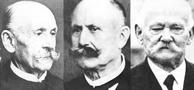
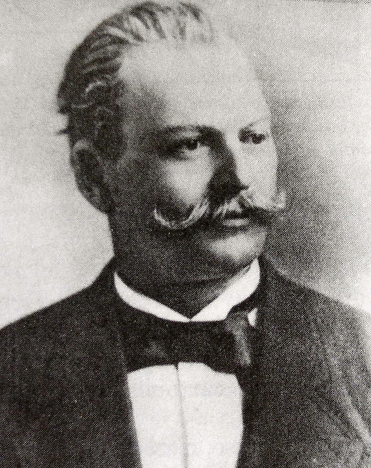

История создания
Пистолет был разработан работниками компании «Маузер» — братьями Фиделем, Фридрихом и Йозефом Федерле (Feederle). Фидель Федерле заведовал экспериментальным цехом оружейного завода «Маузер» (Waffenfabrik Mauser), и новый пистолет изначально назывался P-7.63 или пистолет Федерле. В дальнейшем пистолет был запатентован на имя Пауля Маузера в Германии в 1895 г. (немецкий рейхспатент № 90430 от 11 сентября 1895 года), в Великобритании в 1896 г.
В 1896 году были изготовлены первые пистолеты, в 1897 году началось их серийное производство, которое продолжалось до 1939 года. За это время было выпущено более миллиона пистолетов C96.
Во время Второй мировой войны союзные войска разрушили фабрику Маузера в Оберндорфе. Была разграблена уникальная коллекция оружия и уничтожена почти вся документация предприятия (по одним сведениям это были американские войска, по другим французские союзные войска). По этой причине остается много загадок о количестве выпущенного оружия и количестве разновидностей пистолета Маузер К-96 (Mauser C96). В том числе до настоящего времени обсуждается вопрос о причастности самого Пауля Маузера к разработке пистолета.
Одна из причин, по которой пистолет Маузера столь популярен — его эффективность. Именно этот пистолет можно определить как первый в мире образец оружия класса PDW (Personal Defense Weapon). Пистолет позиционируется как небольшой автоматический карабин, чем он в сущности и является: деревянная кобура используется в качестве приклада, а темп стрельбы составляет до 900 выстрелов в минуту.